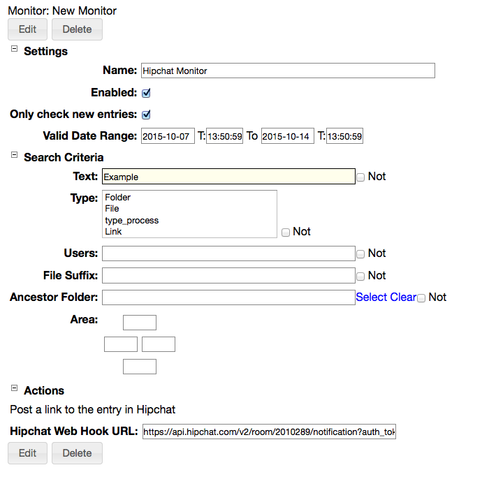

Hipchat Integration
The RAMADDA Hipchat plugin provides a number of services for integrating RAMADDA search and content management services
with
Atlassian HipChat.
Searching and Accessing Data
Using Hipchat's "/slash" commands you can configure a Hipchat room to support searching and navigating
a RAMADDA repository. Along with its own content RAMADDA can provide search services to over 150 sources of content
and data incuding Google, YouTube, Flickr and PubMed to name just a few.
- From your HipChat Room go to the Integrations page. Choose "Find New" and "Build your own". Click on "Add a command".
- Enter the name of the slash command, e.g. "/ramadda".
- In the "We will POST to this URL" enter your RAMADDA HipChat API URL, e.g.:
http://<your host>repository/hipchat/api?ramadda_key=<some secret key>
The ramadda_key should be a secret key. This is what is used to authenticate with RAMADDA later.
- Copy the "Send messages to this room by posting to this URL" URL.
- To enable HipChat to talk with your RAMADDA you will create a HipChat Harvester.
- Login to RAMADDA as an administrator and go to the Admin->Harvesters page.
- Select New Harvester and select "Hipchat Harvester". (If you don't see it in the list then you don't have the hipchat plugin installed). You'll see something like:

- Specify the name of the harvester and a base entry that is used for navigation in HipChat.
- Specify the ramadda_key secret key that was in the URL provided to HipChat
- Enter the HipChat URL in the "Web Hook URL" field.
- To publish files back to HipChat you need to create a HipChat API token. Go to the HipChat API page, e.g. -
https://ramadda.hipchat.com/account/api. Create a token with the "Send ..." and "View ..." scopes selected. Enter the token for the harvester.
- Test it out. From HipChat enter the following message. This should return a help message.
/ramadda ?
To search your RAMADDA enter:
/ramadda search some text
You can also search any of the external search providers within RAMADDA. To search other sites enter:
/ramadda search -provider google birds
Or as a shortcut:
/ramadda search -google birds
Other providers include:
/ramadda search -quandl economic data
/ramadda search -flickr bees
/ramadda search -youtube flowers
/ramadda search -ncbi_pubmed medical
/ramadda search -eia energy
/ramadda search -fred economic data
etc.
You can make a slash command that is a short cut to search. Go and create the command, maybe naming it "/search". The URL that points to your RAMADDA should have:
https://<your host>/repository/hipchat/api?ramadda_key=<some secret key>&command=search
And create a harvester and provide the secret key.
To search just enter:
/search -provider flickr birds
Importing Hipchat Rooms and Messages
You can dynamically import HipChat Rooms and Messages into RAMADDA and display
them in any number of ways.
First, get an API key from your HipChat server, e.g.:
https://ramadda.hipchat.com/account/api
They key should have "View Group", "View Messages" and "View Room" permissions.
RAMADDA Event Notification
RAMADDA allows you to send notifications of new content to a Hipchat chat room using an
Entry Monitor.
- Go to your user settings page when logged into RAMADDA and there is a Monitors link. Select "New Hipchat Action".

- Specify a search criteria to apply and enter the Hipchat message URL that is available from the Room Integrations page in Hipchat. Whenever a new entry is created in RAMADDA a notification message will be sent to HipChat.
Jira Integration
RAMADDA can be configured to search an external Jira repository.
Note: for now this only supports publicly accessible Jira servers.
To configure searching Jira create a
classes.txt, e.g., jira_classes.txt, and place it in the plugins directory under your RAMADDA home directory. Add the below lines and restart your RAMADDA.
#Format:
#org.ramadda.plugins.atlassian.JiraSearchProvider;<ID>;<BASE URL>;<LABEL>
#e.g.:
org.ramadda.plugins.atlassian.JiraSearchProvider;apache;https://issues.apache.org/jira;Apache JIRA
org.ramadda.plugins.atlassian.JiraSearchProvider;spring;https://jira.spring.io;Spring JIRA
org.ramadda.plugins.atlassian.JiraSearchProvider;twitter4j;http://jira.twitter4j.org;Twitter4J JIRA
To configure searching a Confluence site add:
#Format:
#org.ramadda.plugins.atlassian.ConfluenceSearchProvider;<ID>;<BASE URL>;<LABEL>
#e.g.:
org.ramadda.plugins.atlassian.ConfluenceSearchProvider;atlassian;https://confluence.atlassian.com;Atlassian Confluence Site